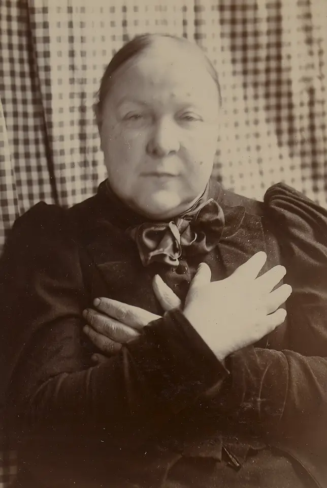

DX.10 — Hypothyroïdie (myxœdème)
1. Définition
L'hypothyroïdie est un déficit en hormones thyroïdiennes, qui ralentit le métabolisme de tous les organes. Elle est primaire quand la thyroïde est atteinte, et centrale quand l'hypophyse ou l'hypothalamus l'est. Le myxœdèmeŒdème de la peau et des tissus mous dû à l'accumulation de glycosaminoglycanes qui retiennent l'eau. Il ne prend pas le godet. Le même nom sert aussi à désigner l'hypothyroïdie sévère, ce qui le rend ambigu. Gull l'a décrit en 1874 ; le « coma myxœdémateux » désigne la décompensation.2,3 en est la forme cutanée et sévère.2
2. Épidémiologie (Suisse, puis Europe)
L'hypothyroïdie manifeste reste rare, puisqu'elle touche 0,3 % de la population générale (Revue médicale suisse 2018)4. En revanche, la forme infraclinique, qui augmente avec l'âge et prédomine chez les femmes, atteint jusqu'à 18 % des personnes âgées (Swiss Medical Weekly 2014)5. Elle pèse donc sur la santé publique par le risque cardiovasculaire, le coût et le surtraitement, que le tableau des groupes à risque détaille.
3. Physiopathologie
Cascade, étape par étape. Amorce, niveau moléculaire : la thyroïde ne fabrique plus assez d'hormones, par destruction auto-immune, chirurgie, iode radioactif, carence en iode ou médicament. La Cordarone® et le lithium (Priadel®) en sont des causes médicamenteuses9,10. Développement, niveau cellulaire : les hormones ne se fixent plus assez sur leurs récepteurs nucléaires, et la production d'énergie et de chaleur baisse. L'AIPS décrit leur effet principal comme l'augmentation de la production énergétique de tout l'organisme.11
Installation, niveau tissulaire : les glycosaminoglycanes s'accumulent dans la peau, la langue, le cœur et les cordes vocales, et retiennent l'eau. Cela donne un œdème qui ne prend pas le godet, une macroglossie et une voix rauque3. Le cœur ralentit, l'intestin aussi, et les lipides et la créatine kinase montent. Maintien, niveau clinique : tant que l'hormone manque, la fatigue, la frilosité, la prise de poids, la constipation et la peau sèche persistent.2
La décompensation survient quand un facteur déclenchant s'ajoute à un déficit sévère : froid, infection, accident vasculaire cérébral, événement cardiaque, saignement digestif, sédatifs ou diurétiques. Le patient devient somnolent, hypotherme, bradycarde et hypoventilé. La température basse prédit la mortalité. Une insuffisance surrénalienne associée explique le risque de crise addisonienne quand la substitution rétablit le métabolisme.
Le tableau de corrélation relie chaque perturbation à l'examen qui la montre et au traitement qui la corrige.
4. Démarche diagnostique
La démarche part du titre : un patient présente un œdème ou des signes de ralentissement. Le médecin exclut d'abord ce qui menace la vie, puis confirme l'hypothyroïdie par la TSH et la thyroxine libre. Il cherche ensuite la cause.2,3
Étape 1 : le médecin exclut d'abord six drapeaux rouges (🚩 = menace vitale ou perte de chance). Ce sont le coma myxœdémateux, l'insuffisance surrénalienne associée, la cardiopathie ischémique, l'épanchement péricardique ou pleural, la grossesse et l'âge pédiatrique.
🚩 Règle d'or : un patient hypotherme, bradycarde ou somnolent, connu hypothyroïdien ou non, reçoit une hydrocortisone et une substitution thyroïdienne sur la seule clinique, sans attendre le laboratoire.3
Étape 2 : sans drapeau rouge, le médecin suit des étapes successives. Il reconnaît d'abord le tableau : fatigue, frilosité, prise de poids, constipation, voix rauque et peau sèche. Il examine ensuite la thyroïde, la peau et les réflexes, et il recherche un œdème. Il dose alors la TSH, puis la thyroxine libre si la TSH est anormale. Il recherche enfin la cause (anticorps anti-TPO, chirurgie, médicaments), puis il décide du traitement selon la forme manifeste ou infraclinique (points 8 et 11).2,4
Étape 3 : le médecin confronte l'œdème aux autres diagnostics de la liste ; l'ordre suivant reste celui de la liste et ne donne aucune fréquence. La liste comprend d'abord l'insuffisance veineuse chronique, dont l'œdème vespéral prend le godet avec une TSH normale. Viennent ensuite l'obésité et les atteintes rénale et cardiaque (godet, NT-proBNP, protéinurie). Elle comprend aussi l'œdème médicamenteux, la thrombose veineuse profonde (œdème unilatéral), la cirrhose, le lymphœdème, le lipœdème, l'érysipèle, l'angio-œdème et la prééclampsie. Le signe qui tranche pour l'hypothyroïdie est l'œdème sans godet, avec TSH élevée. Le piège consiste à conclure à l'hypothyroïdie devant tout œdème des jambes.2,7
5. Anamnèse ciblée et drapeaux rouges
Le symptôme d'appel associe un gonflement sans godet et un ralentissement général, dont le médecin précise le siège, le type, l'évolution et les signes associés. Les questions clés cherchent ensuite la cause, les médicaments, la grossesse, l'observance, la biotine et les signes de décompensation.
🚩 Drapeaux rouges actionnables : un trouble de conscience, une hypothermie ou une bradycardie imposent l'urgence, les soins intensifs et l'hydrocortisone. Un angor ou un ECG anormal imposent l'avis de cardiologie avant la dose pleine. Une grossesse impose l'avis d'endocrinologie, sans interruption du traitement. Une dyspnée avec bruits du cœur assourdis impose l'échocardiographie. Un enfant ou un nouveau-né impose l'avis de pédiatrie endocrinienne.3,11
6. Examen physique ciblé, région par région
L'examen décrit d'abord le normal, puis le pathologique. La valeur de ces signes reste qualitative.2,3
Le médecin suit l'ordre topo-systémique, de la tête aux pieds. Il examine dans l'ordre : signes vitaux, visage et peau, langue et voix, cou et thyroïde. Il poursuit par cœur et poumons, abdomen, jambes et œdème, réflexes et neurologie. Chaque fenêtre décrit la technique, l'aspect normal et pathologique, la valeur et le piège ; celle du visage montre un myxœdème interprété.
7. Approche syndromique
L'hypothyroïdie se regroupe en quatre syndromes ; chacun comprend des signes fonctionnels, que le patient rapporte, et des signes physiques, que le médecin trouve.
7.1 Syndrome d'hypométabolisme
Le syndrome d'hypométabolisme associe frilosité, prise de poids, fatigue, constipation, bradycardie et hypothermie, car la production d'énergie et de chaleur baisse. La fenêtre du syndrome donne pour chaque signe sa définition, son geste et son mécanisme.
7.2 Syndrome d'infiltration myxœdémateuse
Le syndrome d'infiltration myxœdémateuse associe voix rauque, peau sèche, œdème sans godet, macroglossie et épanchements, car les glycosaminoglycanes retiennent l'eau. Chaque signe se recherche selon la fenêtre de l'infiltration.
7.3 Syndrome neuromusculaire et neuropsychique
Le syndrome neuromusculaire et neuropsychique associe lenteur, troubles de mémoire, humeur basse, réflexes lents et créatine kinase élevée, car le métabolisme cérébral et musculaire ralentit. Les gestes figurent dans la fenêtre neuromusculaire.
7.4 Syndrome de décompensation (coma myxœdémateux)
Le syndrome de décompensation associe somnolence, hypothermie, hypoventilation, hypotension, hyponatrémie et hypoglycémie, car le déficit sévère atteint plusieurs organes. La fenêtre de la décompensation détaille la recherche de chaque signe.
8. Diagnostic positif et critères
Le diagnostic est biologique : il repose sur la TSHThyréostimuline : hormone hypophysaire qui stimule la thyroïde. Elle monte quand la thyroïde fabrique trop peu d'hormone (forme primaire).2 et la thyroxine libreFraction de la thyroxine non liée aux protéines, donc active. Elle baisse dans l'hypothyroïdie manifeste., interprétées avec la clinique. Trois références fondent ce diagnostic. La première est la synthèse suisse sur l'hypothyroïdie infraclinique (2014)5. S'y ajoutent le consensus européen sur le coma myxœdémateux (2026)3 et la liste de smarter medicine de la SGED (2025)12. La définition de l'hypothyroïdie repose sur des intervalles de référence statistiques, qui font débat. La forme manifeste associe une TSH élevée à une thyroxine libre basse. La forme infraclinique associe une TSH élevée à une thyroxine libre normale5. La forme centrale associe une thyroxine libre basse à une TSH basse ou normale3. La fenêtre des formes et pièges de terminologie précise ces formes, la thyroïdite de Hashimoto et le syndrome de basse triiodothyronine.
Diagnostic positif : ce qui suffit et ce qui ne suffit pas.
| Résultat biologique évalué | Suffit pour poser le diagnostic ou traiter ? | Commentaire |
|---|---|---|
| TSH élevée avec thyroxine libre basse | Oui | Hypothyroïdie primaire manifeste |
| TSH élevée avec thyroxine libre normale | Non, pour traiter | Hypothyroïdie infraclinique ; refaire le dosage avant de décider |
| Un seul dosage anormal de la TSH | Non | La SGED déconseille la lévothyroxine de routine après un seul résultat anormal, sauf hypothyroïdie manifeste documentée |
| Symptômes seuls | Non | Les symptômes d'hypothyroïdie ne repèrent pas les femmes enceintes à traiter13 |
| Œdème sans godet, voix rauque, peau sèche | Non | Évoquent le diagnostic ; il faut la TSH |
| Anticorps anti-TPOAnticorps dirigés contre la thyroperoxydase ; leur présence signe une thyroïdite auto-immune (Hashimoto). Ne pas les répéter s'ils sont déjà positifs (SGED).12 positifs | Non | Précisent la cause (Hashimoto) ; ne pas les répéter si déjà positifs (SGED) |
| TSH légèrement élevée chez le sujet très âgé | Non | L'AIPS note que la TSH est naturellement plus élevée chez le sujet âgé ; une petite hausse n'impose pas un traitement |
| Maladie aiguë, biotine | Non | Peuvent fausser les résultats ; refaire le dosage |
Scores et classifications d'usage immédiat : score de Popoveniuc pour le coma myxœdémateux. Un score de 60 ou plus est très évocateur3. Un score de 45 à 59 indique un risque3. Un score sous 45 ne classe pas le patient à risque, mais il n'écarte pas le coma si la clinique est évocatrice3. Le score se lit avec la clinique et la biologie, car le sepsis et les événements cardiovasculaires peuvent donner les mêmes points.3
La grille de Popoveniuc précise les points de chaque critère : température, conscience, digestif, facteur déclenchant, fréquence cardiaque, atteinte cardiovasculaire et métabolique.
9. Examens complémentaires
9.a Gold standard
Il n'existe aucun examen d'imagerie de référence. Le test de référence est biologique : la TSH, complétée par la thyroxine libre. Les sources (consensus ETA 2026, Revue médicale suisse 2018) fondent donc le diagnostic sur l'association de la TSH et de la thyroxine libre.2,3
9.b Examens de 1re intention
Le médecin demande la TSH, puis la thyroxine libre si la TSH est anormale. Les valeurs de référence sont celles du laboratoire, en unités du Système international.2,5
La TSH ouvre le bilan ; la thyroxine libre le complète si la TSH est anormale ou si une forme centrale est suspecte.
9.c Alternatives et examens associés
Les anticorps anti-TPO précisent une thyroïdite auto-immune ; le médecin ne les répète pas s'ils sont déjà positifs12. L'échographie de la thyroïde ne se fait pas de routine quand la palpation est normale. Le médecin complète par les lipides, la natrémie, la créatine kinase et l'hémogramme, souvent anormaux3. L'ECG précède la substitution chez le sujet âgé ou coronarien.11
9.d Examens de 2e intention
Le cortisol à 9 heures ou le test à la cosyntropine exclut une insuffisance surrénalienne avant d'arrêter les stéroïdes123. L'IRM de l'hypophyse recherche une cause centrale ; elle est indiquée si la thyroxine libre est basse avec une TSH non élevée. Dans le coma, la gazométrie, la glycémie et la natrémie guident la réanimation.
Un résultat discordant (TSH élevée, thyroxine libre très élevée) évoque une interférence de la biotine ou une prise récente de lévothyroxine ; il faut refaire le dosage. Grossesse : les intervalles de référence se ciblent par trimestre ; l'AIPS interdit les tests de freination radioactifs. Enfant : le dosage suit l'âge. Insuffisance rénale ou DFGe bas : l'AIPS ne précise aucune dose particulière pour la lévothyroxine. Dispositif non compatible avec l'IRM : l'IRM de l'hypophyse se discute avec la radiologie.
10. Arbre décisionnel
L'arbre exclut d'abord les urgences, puis confirme l'hypothyroïdie, puis décide du traitement.2,3
• Le premier nœud exclut l'urgence. Si le patient est hypotherme, confus ou bradycarde → le médecin traite un coma myxœdémateux par soins intensifs, hydrocortisone et lévothyroxine (11.B.1)3. Si le patient a un ECG anormal ou une maladie cardiovasculaire → le médecin donne une dose initiale faible de 25 µg11. Si le patient a une angine de poitrine, l'AIPS contre-indique la lévothyroxine ; le médecin traite d'abord l'angine avec le cardiologue. Si la patiente est enceinte sous traitement → le médecin continue la lévothyroxine sans interruption. Dans les autres cas, le médecin poursuit au nœud 2.3,11
• Le deuxième nœud dose la TSH. Si la TSH est normale → le médecin écarte l'hypothyroïdie primaire ; en cas de suspicion centrale, il dose la thyroxine libre2. Si la TSH est élevée → il passe au nœud 3.2
• Le troisième nœud dose la thyroxine libre. Si elle est basse → l'hypothyroïdie est manifeste et le médecin passe au nœud 55. Si elle est normale → la forme est infraclinique et le médecin passe au nœud 4.5
• Le quatrième nœud traite la forme infraclinique. Si la TSH reste sous 10 mUI/L chez un patient asymptomatique → le médecin ne traite pas et contrôle la TSH4. Si la TSH atteint 10 mUI/L ou plus de façon confirmée, ou en cas de symptômes marqués, de grossesse ou de risque cardiovasculaire → le médecin discute le traitement.4,8,12
• Le cinquième nœud cherche la cause. Si les anti-TPO sont positifs → le médecin retient une thyroïdite de Hashimoto2. Si le patient prend de l'amiodarone ou du lithium → le médecin discute l'agent avec le prescripteur. Après chirurgie ou iode radioactif, la cause est évidente. Le médecin substitue alors et contrôle la TSH.2,9,10,12
• Le sixième nœud suit le traitement. Si la TSH reste élevée → le médecin vérifie l'observance, les horaires et les interactions, puis augmente la dose. Si la TSH est basse → le médecin réduit la dose pour un surdosage.11
11. Prise en charge selon les recommandations suisses
11.A But thérapeutique
Le traitement vise une TSH dans l'intervalle de référence du laboratoire, la disparition des symptômes et l'absence de décompensation.11
Dans le coma, il vise une thyroxine libre au milieu de l'intervalle de référence3.
Le plein effet de la lévothyroxine n'apparaît que 1 à 3 semaines après le début du traitement oral15. L'AIPS augmente la dose par paliers de 25 à 50 µg toutes les 2 à 4 semaines11. Après tout changement de marque ou de préparation, le consensus européen (ETA 2025) conseille de mesurer la thyroxine libre et la TSH six semaines plus tard (recommandation forte)18. Le traitement dure le plus souvent à vie. Chez le sujet âgé ou cardiaque, l'AIPS conseille une dose d'entretien plus faible, sans viser une TSH parfaitement normale.11
11.B Moyens
11.B.1 Urgences chronologiques (formes compliquées)
Devant un coma myxœdémateux, avec hypothermie, trouble de conscience et bradycardie, la conduite chronologique d'urgence s'impose.
11.B.2 Mesures générales (formes non compliquées)
Le médecin confirme le diagnostic, explique que le traitement dure en général toute la vie et cherche la cause. Il vérifie les médicaments goitrigènes. Il rappelle que les hormones thyroïdiennes ne servent pas à maigrir : l'AIPS le précise, car chez le patient euthyroïdien elles n'ont aucun effet amaigrissant et les doses élevées sont dangereuses.11
11.B.3 Traitement pharmacologique (ordre : substitution, puis ajustement)
Ordre des étapes et raison. Étape 1 : substituer par la lévothyroxine seule, car elle redonne l'hormone manquante. Étape 2 : commencer lentement chez le sujet âgé et le coronarien, car le cœur supporte mal une montée rapide. Étape 3 : contrôler la TSH et ajuster, car l'effet se stabilise en quelques semaines. Étape 4 : ne pas associer de la liothyronine de routine, car son bénéfice reste débattu.11,3
| Situation | Spécialité (n° Swissmedic) | Dose, voie, durée (AIPS) | Remarques de sécurité |
|---|---|---|---|
| Adulte, hypothyroïdie | Euthyrox® (54949) | Dose initiale 25 à 50 µg par jour, voie orale, à jeun, le matin ; augmentation de 25 à 50 µg toutes les 2 à 4 semaines ; entretien 100 à 200 µg par jour ; durée le plus souvent à vie11 | Contre-indiqué en cas d'angine de poitrine, d'infarctus aigu, de myocardite aiguë, d'insuffisance cardiaque avec tachycardie et d'atteinte hypophysaire ou surrénalienne non traitée |
| Sujet âgé, hypothyroïdie sévère ou ancienne, cardiopathie | Euthyrox® (54949) | Dose initiale 25 µg par jour, montée prudente à intervalles plus longs, dose d'entretien plus faible11 | Contrôler souvent les hormones ; la TSH est naturellement plus élevée chez le sujet âgé |
| Association levothyroxine et liothyronine | Novothyral® (37716) | Dose initiale ½ comprimé par jour pendant 8 jours, puis +½ comprimé toutes les 2 semaines ; entretien ½ à 2 comprimés par jour15 | Mêmes précautions cardiaques ; prise à jeun |
| Enfant de moins de 12 ans | Euthyrox® (54949) | 0 à 6 mois : 25 à 75 µg (10 µg/kg) ; 6 à 12 mois : 50 à 75 µg (8 µg/kg) ; 1 à 5 ans : 75 à 100 µg (5 à 6 µg/kg) ; 6 à 12 ans : 100 à 150 µg (4 à 5 µg/kg)11 | Le comprimé se délite dans un peu d'eau chez le nourrisson |
| Grossesse et allaitement | Euthyrox® (54949) | Continuer sans interruption ; une dose plus forte peut être nécessaire ; après l'accouchement, revenir à la dose d'avant la grossesse et contrôler la TSH 6 à 8 semaines plus tard11 | Suivi par un spécialiste ; passage dans le lait trop faible pour inhiber la TSH du nourrisson |
| Insuffisance hépatique ou rénale | Euthyrox® (54949) | Aucune recommandation de dose : la pharmacocinétique n'a pas été étudiée11 | Tenir compte d'une modification de la liaison protéique |
L'AIPS impose un intervalle. Le patient prend la lévothyroxine 4 à 5 heures avant les résines échangeuses d'ions (Quantalan®), et au moins 2 heures avant les sels d'aluminium, de fer et de calcium11. Les inhibiteurs de la pompe à protons peuvent réduire l'absorption, et l'orlistat peut provoquer une hypothyroïdie. Les antagonistes de la vitamine K, les glycosides cardiaques et les antidiabétiques demandent un contrôle ; les œstrogènes et les agents de contraste iodés augmentent le besoin en lévothyroxine. Le patient est informé des effets d'un surdosage : palpitations, tremblement, insomnie, diarrhée, perte de poids, sueurs.
Dans la forme infraclinique, l'essai TRUST a inclus 737 patients de 65 ans et plus, avec une TSH de 4,60 à 19,99 mUI/L16. Il montre que la lévothyroxine n'améliore ni les symptômes ni la fatigue après un an16. Le rapport de l'OFSP de 2022 conclut que le traitement abaisse la TSH sans réduire les plaintes8. Depuis le 1er mai 2025, la liste des spécialités de l'OFSP limite le remboursement de la lévothyroxine à quatre situations17. La première est l'hypothyroïdie avec TSH élevée et thyroxine libre basse17. La deuxième est la forme infraclinique, seulement si la TSH atteint 10 mU/l, ou sous ce seuil après une première prescription par un endocrinologue17. La troisième concerne la femme infertile, le projet de grossesse et la grossesse, où la forme infraclinique est aussi remboursée17. La quatrième situation concerne les indications hors hypothyroïdie de l'information professionnelle17. Chez les patients présentant des malabsorptions, l'ETA 2025 propose les formes liquides et en capsule.18
11.B.4 Non pharmacologique, social et professionnel
Le patient apprend la prise à jeun, à heure fixe, l'intervalle avec le calcium, le fer et le café, et l'ajustement lors d'une grossesse. Le médecin dépiste l'humeur basse et les troubles de mémoire11. L'arrêt de travail, les prestations de la LAMal, de la LAA et de la LAI pour l'hypothyroïdie relèvent du médecin traitant. Il adapte aussi la conduite automobile et la réinsertion à la situation du patient. La LAMal rembourse la lévothyroxine selon ce que permet la limitation de la liste des spécialités.17
11.C Surveillance
Le médecin mesure la thyroxine libre et la TSH six semaines après tout changement de marque ou de préparation18. Il ajuste la dose par paliers de 2 à 4 semaines11. Il la contrôle 6 à 8 semaines après l'accouchement11. Il surveille l'ECG et les symptômes cardiaques chez le coronarien. En cas d'amiodarone, il dose la TSH avant, pendant et plusieurs mois après le traitement.9
Des palpitations, un angor ou une perte de poids rapide alertent le médecin, car ils signalent un surdosage. Il s'alerte aussi devant une somnolence, un froid intense ou une bradycardie, car ils signalent une décompensation. Le suivi stable se fait, selon l'AIPS, « à intervalles réguliers ». Après un coma myxœdémateux, le patient quitte les soins intensifs lorsqu'il est conscient, qu'il prend la lévothyroxine par voie orale et que le facteur déclenchant est traité.3
11.D Pronostic, guérison, recherche
Le pronostic est bon sous substitution. Le traitement ne guérit pas la maladie auto-immune : il remplace l'hormone, le plus souvent à vie. Une partie des patients reste symptomatique malgré une TSH normale2. Le coma myxœdémateux reste grave. Pistes de recherche 2026 : une revue cardiologique européenne juge incertain l'effet cardiovasculaire de la lévothyroxine dans la forme infraclinique219. Une analyse de l'essai TRUST de 2026 ne trouve aucun effet sur les lipides, sauf une tendance si la TSH dépasse 10 mUI/L.19,20
12. Prévention
La prévention cible les groupes à risque plutôt que la population générale. La SGED recommande de ne pas prescrire la lévothyroxine de routine après un seul résultat anormal. Le risque du point 2 (femme, âge, auto-immunité, médicaments) fixe les cibles.12
La fenêtre de prévention précise les gestes primaires, secondaires et tertiaires, avec leur population.
Vaccination : aucune vaccination ne prévient l'hypothyroïdie. Le dépistage néonatal et la prévention de la carence iodée relèvent de la pédiatrie et de la santé publique.
13. Points clés
- Une TSH élevée avec thyroxine libre basse pose l'hypothyroïdie manifeste, et une TSH élevée avec thyroxine libre normale reste infraclinique5.
- Devant un patient hypotherme, bradycarde ou somnolent, le médecin traite sur la clinique par hydrocortisone puis lévothyroxine, en soins intensifs3.
- Le médecin commence la lévothyroxine à 25 à 50 µg par jour, et à 25 µg chez le sujet âgé ou cardiaque (l'angine de poitrine est une contre-indication AIPS)11.
- Le patient prend la lévothyroxine à jeun, au moins une demi-heure avant le petit-déjeuner, et loin du calcium et du fer.
- Le médecin mesure la thyroxine libre et la TSH six semaines après tout changement de préparation18, et il poursuit le traitement pendant la grossesse11.
- Le médecin ne traite pas la forme infraclinique sur un seul dosage ; la liste des spécialités fixe le seuil de remboursement à une TSH de 10 mUI/L12,17.
14. Pièges et questions fréquentes à l'examen fédéral suisse
Quel est le profil biologique de l'hypothyroïdie primaire manifeste ? Réponse : TSH élevée, thyroxine libre basse.2
La TSH est normale et la thyroxine libre basse : peut-on écarter l'hypothyroïdie ? Réponse : Non, il peut s'agir d'une forme centrale.3
Un patient hypotherme et somnolent, connu hypothyroïdien : que fait-on ? Réponse : On traite sans attendre le laboratoire, par hydrocortisone puis lévothyroxine intraveineuse, en soins intensifs.
Pourquoi donne-t-on l'hydrocortisone avant la lévothyroxine dans le coma ? Réponse : Une insuffisance surrénalienne peut coexister, et la substitution peut précipiter une crise addisonienne.
Faut-il réchauffer activement un patient en coma myxœdémateux ? Réponse : Non, seulement des couvertures ; un réchauffement actif peut provoquer un collapsus.
Quelle est la dose initiale de lévothyroxine (Euthyrox®) chez l'adulte ? Réponse : 25 à 50 µg par jour11. La dose augmente ensuite de 25 à 50 µg toutes les 2 à 4 semaines, jusqu'à 100 à 200 µg.11
Quelle dose initiale chez le sujet âgé ou cardiaque ? Réponse : 25 µg par jour, avec montée lente ; l'angine de poitrine contre-indique la lévothyroxine selon l'AIPS11.
Comment prendre la lévothyroxine ? Réponse : le patient la prend à jeun, le matin, une demi-heure avant le petit-déjeuner. Il la prend au moins 2 heures avant le calcium, le fer et l'aluminium, et 4 à 5 heures avant les résines11.
Faut-il traiter une TSH légèrement élevée chez un sujet de 70 ans asymptomatique ? Réponse : non16. L'essai TRUST ne montre aucun bénéfice, et la TSH est naturellement plus élevée chez le sujet âgé.16,11
À quel moment contrôle-t-on la TSH après un changement de préparation de lévothyroxine ? Réponse : Six semaines après, avec la thyroxine libre, selon l'ETA 202518.
La patiente enceinte sous lévothyroxine apprend sa grossesse : que faire ? Réponse : Continuer sans interruption, avec suivi spécialisé ; la dose peut devoir augmenter.
L'amiodarone peut-elle causer une hypothyroïdie ? Réponse : Oui ; l'AIPS demande une TSH avant et pendant le traitement.9
Sources bibliographiques
- [S1] CIM-11 de l'OMS, code 5A00 « Hypothyroidism » (reproduction sur un site tiers, sous-codes non vérifiés ; à contrôler dans le navigateur de l'OMS). https://pabau.com/diagnostic-codes/icd-11-5a00-hypothyroidism-diagnosis-coding-guide/ — consulté le 27.10.2026.
- [S2] Chaker L, Bianco AC, Jonklaas J, Peeters RP. Hypothyroidism. Lancet 2017;390:1550-1562. PMID 28336049. DOI 10.1016/S0140-6736(17)30703-1 — consulté le 27.10.2026.
- [S3] Taylor P, et al. Management of endocrine emergencies: joint consensus statement for management of myxoedema coma. Eur Thyroid J 2026;15(4). DOI 10.1530/ETJ-26-0044. https://www.ncbi.nlm.nih.gov/pmc/articles/PMC13452032/ — consulté le 27.10.2026.
- [S4] Collet TH, Sykiotis GP, Aubert CE, et al. Hypothyroïdie infraclinique : faut-il encore traiter les personnes âgées ? Rev Med Suisse 2018;14:470-474. PMID 29489127. DOI 10.53738/REVMED.2018.14.596.0470 — consulté le 27.10.2026.
- [S5] Baumgartner C, Blum MR, Rodondi N. Subclinical hypothyroidism: summary of evidence in 2014. Swiss Med Wkly 2014;144:w14058. PMID 25536449. DOI 10.4414/smw.2014.14058 — consulté le 27.10.2026.
- [S6] Jonklaas J, Bianco AC, Bauer AJ, et al. Guidelines for the treatment of hypothyroidism: prepared by the American Thyroid Association task force on thyroid hormone replacement. Thyroid 2014;24:1670-1751. PMID 25266247. DOI 10.1089/thy.2014.0028 — consulté le 27.10.2026.
- [S7] AWMF. S2k-Leitlinie Lipödem, n° 037-012, version 5.0, 22.01.2024, chapitre 1.6. https://register.awmf.org/assets/guidelines/037-012l_S2k_Lipoedem_2024-01_01.pdf — consulté le 27.10.2026.
- [S8] Office fédéral de la santé publique. Einsatz des Hormons Levothyroxin bei einer leicht verlaufenden Schilddrüsenunterfunktion (rapport d'évaluation des technologies de la santé), 2022. https://www.bag.admin.ch/en/use-of-the-hormone-levothyroxine-to-treat-a-slightly-underactive-thyroid-gland — consulté le 27.10.2026.
- [S9] AIPS : Cordarone®, comprimés, n° 33393, version du 17.05.2025. https://files.refdata.ch/simis-public-prod/MedicinalDocuments/5def4307d9ea4f2999e1fa2394bb6643-fr.html — lue le 11.11.2026.
- [S10] AIPS : Priadel® retard, n° 35380, version du 09.04.2025. https://files.refdata.ch/simis-public-prod/MedicinalDocuments/6bdde5febfdf4fe286048590fe198b8d-fr.html — lue le 11.11.2026.
- [S11] AIPS : Euthyrox®, n° 54949, version du 14.05.2024. https://files.refdata.ch/simis-public-prod/MedicinalDocuments/f5352e0e4d9b44c1a66a6f1e69061d8d-fr.html — lue le 11.11.2026.
- [S12] Société suisse d'endocrinologie et de diabétologie. Top-5-Liste Endokrinologie und Diabetologie (smarter medicine). Schweiz Ärztezeitung 2025;106(28). https://www.sams.ch/dam/jcr:6697259e-753a-4ae5-a479-e2440ed2a7c3/news_samw_smarter_medicine_top_5_endokrinologie_diabetologie.pdf — consulté le 27.10.2026.
- [S13] Pop VJ, Broeren MA, Wiersinga WM, Stagnaro-Green A. Thyroid disease symptoms during early pregnancy do not identify women with thyroid hypofunction that should be treated. Clin Endocrinol 2017;87:838-843. PMID 28746798. DOI 10.1111/cen.13433 — consulté le 27.10.2026.
- [S14] AIPS : Solu-Cortef®, n° 23533, version du 18.11.2025. https://files.refdata.ch/simis-public-prod/MedicinalDocuments/521df69c10204956ac5a90a438143ee8-fr.html — lue le 11.11.2026.
- [S15] AIPS : Novothyral®, n° 37716, version du 03.04.2023. https://files.refdata.ch/simis-public-prod/MedicinalDocuments/1e38ec65e18d4f62a29ce122e376ec7b-fr.html — lue le 11.11.2026.
- [S16] Stott DJ, Rodondi N, Kearney PM, et al. Thyroid hormone therapy for older adults with subclinical hypothyroidism. N Engl J Med 2017;376:2534-2544. PMID 28402245. DOI 10.1056/NEJMoa1603825 — consulté le 27.10.2026.
- [S17] Office fédéral de la santé publique, Liste des spécialités : limitation des préparations de lévothyroxine (Euthyrox®, Eltroxin®, Novothyral®) en vigueur depuis le 1er mai 2025, texte de la limitation d'Euthyrox® 25 µg (n° 54949) lu le 11.11.2026 sur le miroir ch.oddb.org de la Liste des spécialités (texte officiel : spezialitaetenliste.ch). https://ch.oddb.org/de/gcc/limitation_text/reg/54949/seq/01/pack/001
- [S18] Centanni M, Duntas L, Feldt-Rasmussen U, et al. ETA guidelines for the use of levothyroxine sodium preparations in monotherapy to optimize the treatment of hypothyroidism. Eur Thyroid J 2025;14(4). PMID 40622204. DOI 10.1530/ETJ-25-0123 — consulté le 27.10.2026.
- [S19] Alwan H, Hysaj O, Gencer B, Duntas L, Rodondi N. Thyroid dysfunction and cardiovascular disease. Eur Heart J 2026;47:2606-2623. PMID 41996368. DOI 10.1093/eurheartj/ehag248 — consulté le 27.10.2026.
- [S20] Ao L, Noordam R, Trompet S, et al. Levothyroxine treatment response of cardiometabolic biomarkers in older adults with subclinical hypothyroidism. J Clin Endocrinol Metab 2026;111:2445-2455. PMID 41965091. DOI 10.1210/clinem/dgag155 — consulté le 27.10.2026.
- [S21] AIPS : Quantalan®, n° 50711, version du 12.02.2025. https://files.refdata.ch/simis-public-prod/MedicinalDocuments/240e5289adb94787ba7b65646968918c-fr.html — lue le 11.11.2026.
Urgence — conduite chronologique : coma myxœdémateux (hypothermie, trouble de conscience, bradycardie)
Étape 0 : reconnaître le tableau (antécédent d'hypothyroïdie, somnolence, hypothermie, facteur déclenchant en hiver ou infection). Traiter sur la clinique ; ne pas attendre le laboratoire.3Dès le début : transfert en soins intensifs ou en unité de surveillance. Prélever TSH, thyroxine libre, cortisol, natrémie, glycémie, créatinine, créatine kinase et gazométrie.
Étape 1 : hydrocortisone pour tous les patients, car une insuffisance surrénalienne peut coexister. L'AIPS de Solu-Cortef ® donne des doses initiales jusqu'à 100 mg par voie intraveineuse, en 30 secondes au moins, puis des doses répétées toutes les 2, 4 ou 6 heures. Pour le schéma de relais, hors AIPS, le consensus européen de 2026 recommande 100 mg intraveineux, puis 50 mg quatre fois par jour ; à valider avec un spécialiste avant prescription.14,3
Étape 2 : lévothyroxine intraveineuse. Le consensus européen de 2026 donne une dose de charge de 200 à 400 µg, réduite à 100 à 200 µg chez le sujet âgé, de petit poids, coronarien ou arythmique. Ces doses sont hors AIPS, recommandation du consensus européen ; à valider avec un spécialiste avant prescription. Le consensus avertit qu'une dose trop faible n'inverse pas le tableau, et qu'une dose trop forte peut provoquer une tachycardie fatale ou un infarctus.3
Étape 3 : réchauffement par couvertures seulement (passif) ; un réchauffement actif des extrémités peut provoquer un collapsus cardiovasculaire.
Étape 4 : facteur déclenchant ; antibiotiques à large spectre jusqu'à exclusion d'une infection, car la fièvre peut manquer. Expansion volémique prudente en cas d'hypotension ; surveiller la natrémie ; corriger l'hypoglycémie ; surveiller la ventilation.
Étape 5 : lorsque le patient est stabilisé et conscient, passage à la lévothyroxine orale. Thyroxine libre un jour sur deux, avec but au milieu de l'intervalle de référence. La TSH ne guide pas le traitement dans les premiers jours. Surveiller l'insuffisance rénale aiguë et les saignements digestifs.
Formes et pièges de terminologie
Hypothyroïdie infraclinique
La TSH est élevée et la thyroxine libre reste normale. Elle augmente avec l'âge et touche plus les femmes. Le piège consiste à la traiter d'emblée sur un seul dosage.4,5
Hypothyroïdie centrale
La thyroxine libre est basse, mais la TSH est basse ou normale. Le piège consiste à exclure l'hypothyroïdie parce que la TSH n'est pas élevée.3
Thyroïdite de Hashimoto
Elle détruit la thyroïde par un mécanisme auto-immun, avec des anticorps anti-TPO. Elle constitue une cause d'hypothyroïdie, pas un synonyme ; le chapitre « Thyroïdites » la traite.2
Syndrome de basse triiodothyronine
L'hormone active baisse pendant une maladie grave, sans maladie thyroïdienne. Le piège consiste à doser la thyroïde chez un patient en réanimation et à le traiter à tort. L'ETA 2025 rappelle que les dosages ne s'interprètent pas avec précision chez le patient de réanimation, et elle maintient la dose de lévothyroxine déjà prise18.
Groupes à risque et poids de l'hypothyroïdie
Le tableau associe chaque groupe ou situation au constat rapporté et à sa source.
| Groupe ou situation | Constat rapporté pour le groupe | Source |
|---|---|---|
| Patients avec maladie auto-immune, traités à l'iode radioactif ou opérés de la thyroïde | Groupes à risque d'hypothyroïdie | Source 22 |
| Patients sous amiodarone ou lithium | Groupes à risque d'hypothyroïdie | Source 22 |
| Personnes avec TSH au-dessus de 10 mUI/L8 | Risque cardiovasculaire surtout augmenté au-delà de ce seuil | Source 8 |
| Forme légère traitée par lévothyroxine en Suisse | Coût estimé par l'OFSP (2022) entre 9 et 87 millions de francs sur cinq ans, selon la fréquence d'usage8 | Source 8 |
| Patientes lipœdémateuses (directive allemande, chapitre « Lipœdème ») | Hypothyroïdie chez plus de trente pour cent des patientes | Source 7 |
| Coma myxœdémateux (rare) | Mortalité pouvant atteindre la moitié des patients | Source 3 |
Corrélation : lésion, exploration, thérapeutique
Chaque ligne relie une perturbation à son examen et à son traitement.
| Lésion ou perturbation | Exploration qui la montre | Thérapeutique qui la corrige (mécanisme) |
|---|---|---|
| Déficit en hormones thyroïdiennes (thyroïdite, chirurgie, iode, médicaments) | TSH élevée, thyroxine libre basse ; anti-TPO | Lévothyroxine (Euthyrox®) : remplace l'hormone |
| Destruction auto-immune de la glande | Anti-TPO positifs ; échographie seulement si la palpation est anormale (SGED) | Même substitution, à vie |
| Accumulation de glycosaminoglycanes (œdème non godet, macroglossie) | Examen clinique | Substitution : l'œdème régresse avec la normalisation hormonale |
| Hypercholestérolémie, hyponatrémie, CK élevée, anémie macrocytaire | Bilan lipidique, natrémie, créatine kinase, hémogramme | Substitution, qui corrige ces anomalies ; correction prudente de la natrémie en urgence |
| Hypothermie, trouble de conscience, bradycardie (décompensation) | Température, score de Popoveniuc, TSH et thyroxine libre, cortisol | Hydrocortisone puis lévothyroxine intraveineuse, réchauffement passif, soins intensifs |
| Médicament goitrigène (amiodarone, lithium) | Anamnèse ; TSH avant et pendant le traitement | Substitution ; arrêt de l'agent si possible, avis du prescripteur |
| Absorption réduite de la lévothyroxine | Anamnèse des prises ; TSH qui ne baisse pas | Séparer la prise du calcium, du fer, des résines et revoir les inhibiteurs de la pompe à protons |
Drapeaux rouges de l'hypothyroïdie
Chaque drapeau rouge porte le signe qui le tranche, le piège et la conduite immédiate.
| Drapeau | Signe ou examen qui tranche | Piège | Conduite immédiate |
|---|---|---|---|
| 🚩 Coma myxœdémateuxRouge : hypothermie, trouble de conscience et défaillance de plusieurs organes tuent sans traitement. Le patient est le plus souvent une femme âgée, déjà connue hypothyroïdienne, qui prend mal son traitement.3 | Température basse, bradycardie, hypoventilation, somnolence ; TSH très élevée ; score de Popoveniuc | Attendre les résultats avant de traiter ; ne pas chercher le facteur déclenchant | Soins intensifs, hydrocortisone, lévothyroxine, réchauffement passif |
| 🚩 Insuffisance surrénalienne associéeRouge : la substitution thyroïdienne accélère le métabolisme du cortisol et peut précipiter une crise addisonienne. | Hypotension, hyponatrémie, hypoglycémie ; cortisol avant les stéroïdes | Substituer la thyroïde sans couverture par glucocorticoïde | Hydrocortisone avant ou avec la lévothyroxine |
| 🚩 Cardiopathie ischémique ou arythmieRouge : une dose trop forte de lévothyroxine peut provoquer une tachycardie ou un infarctus. L'AIPS contre-indique la lévothyroxine en cas d'angine de poitrine et d'infarctus aigu.11 | Angor, ECG anormal, âge avancé | Commencer à pleine dose chez un patient coronarien | Dose initiale de 25 µg par jour, montée lente11 |
| 🚩 Épanchement péricardique ou pleuralRouge : le liquide peut comprimer le cœur. Il s'inscrit dans le score de Popoveniuc.3 | Dyspnée, bruits du cœur assourdis ; échocardiographie | Attribuer la dyspnée à la prise de poids | Échocardiographie, cardiologie |
| 🚩 Hypothyroïdie pendant la grossesseRouge : le traitement doit continuer sans interruption, et la dose augmente souvent. Le suivi est étroit.11 | Grossesse connue ou suspectée sous lévothyroxine | Interrompre la lévothyroxine | Continuer ; avis d'endocrinologie ; TSH rapprochée |
| 🚩 Hypothyroïdie du nourrisson et de l'enfantRouge : les hormones thyroïdiennes pilotent la croissance et le développement ; une substitution rapide et complète est essentielle. | Retard de croissance, léthargie, ictère prolongé du nouveau-né | Attendre pour doser la TSH | TSH, avis de pédiatrie endocrinienne |
Questions clés de l'anamnèse
Chaque question porte sa raison physiopathologique et ce que la réponse change.
| Question | Raison physiopathologique | Ce que la réponse change |
|---|---|---|
| Y a-t-il fatigue, frilosité, prise de poids, constipation, peau sèche, voix rauque ? | Le ralentissement du métabolismeMoins d'énergie et de chaleur produites ; l'intestin et le cœur ralentissent.2,11 explique ces plaintes.2 | Elles évoquent l'hypothyroïdie ; elles ne la prouvent pas, il faut la TSH. |
| Une thyroïdite, une chirurgie du cou ou un traitement à l'iode radioactif existent-ils ? | La glande détruite ou retiréeAprès thyroïdectomie, iode radioactif ou thyroïdite auto-immune, la production d'hormone s'arrête ; la substitution est alors définitive.3 ne produit plus d'hormone. | Cause évidente ; substitution à vie. |
| Prend-on de l'amiodarone, du lithium ou une immunothérapie ? | Ces agents peuvent induire une hypothyroïdieL'amiodarone contient beaucoup d'iode ; le lithium freine la libération de thyroxine. L'AIPS demande une TSH avant et pendant le traitement.9,10. | Surveiller la TSH ; discuter l'arrêt avec le prescripteur. |
| La patiente est-elle enceinte ou en post-partum ? | Les besoins en lévothyroxine augmentent pendant la grossesse. | Continuer le traitement ; TSH rapprochée. |
| Le traitement est-il pris à jeun, loin du calcium, du fer, du café et des inhibiteurs de la pompe à protons ? | Ces produits réduisent l'absorption de la lévothyroxine. | Corriger l'horaire avant d'augmenter la dose. |
| Y a-t-il somnolence, confusion, froid intense, chute récente, infection ? | Ce sont les facteurs et signes de la décompensation. | Oui : urgence. |
| Y a-t-il un angor, des palpitations, une maladie cardiaque ? | Le cœur supporte mal une substitution rapide. | Dose initiale plus faible. |
| Prend-on de la biotine ? | La biotineVitamine qui interfère avec les immunodosages fondés sur la liaison biotine-streptavidine ; les résultats de TSH et d'hormones peuvent être faussement bas ou élevés.11 fausse les dosages hormonaux. | Prévenir le laboratoire ou arrêter avant le prélèvement. |
| Des proches ont-ils une maladie thyroïdienne ou auto-immune ? | La thyroïdite auto-immuneMaladie où les lymphocytes et les anticorps anti-TPO détruisent la glande ; elle se regroupe dans les familles et avec d'autres maladies auto-immunes.2 est familiale. | Augmente la probabilité de Hashimoto. |
Gonflement et ralentissement : caractérisation
Le patient hypothyroïdien consulte pour un gonflement et pour un ralentissement général. Le médecin caractérise ces plaintes, car l'œdème myxœdémateux se distingue des œdèmes des autres causes.
- Siège : l'infiltration touche le visage et les paupières, la langue, la peau et les jambes ; elle peut se généraliser.
- Type : l'œdème ne prend pas le godet, car les glycosaminoglycanes retiennent l'eau dans le tissu ; la peau devient sèche, épaisse et froide.
- Évolution : les plaintes s'installent lentement ; la somnolence qui s'aggrave sur des semaines annonce la décompensation.
- Signes associés : la fatigue, la frilosité, la prise de poids, la constipation et la voix rauque accompagnent l'œdème, car le métabolisme ralentit.
- Facteurs aggravants : le froid, une infection, un sédatif ou une prise irrégulière de la lévothyroxine déclenchent la décompensation.
Typique ou non : le tableau est typique quand un œdème sans godet s'associe aux signes de ralentissement. Un œdème qui prend le godet oriente vers une autre cause, cardiaque, rénale ou veineuse. Les plaintes seules ne prouvent rien : la TSH tranche.
Examen : signes vitaux
Technique : le médecin mesure la température centrale avec un thermomètre adapté aux basses valeurs, compte le pouls une minute et prend la tension.
Aspect normal : la température est normale, le pouls régulier, la fréquence respiratoire stable.
Aspect pathologique : le patient est hypotherme, bradycarde, hypotendu ou hypoventilé.
Valeur : l'hypothermie prédit la mortalité du coma. Piège : un thermomètre ordinaire ne mesure pas les valeurs les plus basses.
Examen : visage et peau
Technique : le médecin inspecte le visage de face ; il recherche à la palpation l'état de la peau du dos de la main et de l'avant-bras et compare la température cutanée.
Aspect normal : la peau est souple, chaude, et les sourcils sont fournis.
Aspect pathologique : le visage est bouffi, les paupières gonflées, la peau sèche et épaisse, froide, les cheveux cassants.
Valeur : ces signes orientent vers l'infiltration myxœdémateuse. Piège : une peau sèche se voit aussi chez le sujet âgé sans hypothyroïdie.
Myxœdème : visage et mains. La photographie ancienne, en noir et blanc et de face, montre une patiente myxœdémateuse (collection Wellcome).

Lisez d'abord seul ce cliché (myxœdème : visage et mains) : cherchez vous-même le signe.
La copie annotée (myxœdème : visage et mains) porte les repères numérotés, qui sont décrits ci-dessous.
- Les paupières supérieures paraissent lourdes et gonflées : la peau du visage est infiltrée.
- Les joues et le menton forment un visage rond et empâté, sans relief des pommettes.
- Les doigts de la main droite sont larges et épais : l’infiltration atteint aussi les tissus des mains.
- Une peau sèche existe aussi chez le sujet âgé sans hypothyroïdie : seul le dosage de la TSH confirme le déficit.
Ce que l'image décide : un visage bouffi avec une peau sèche et froide fait doser la TSH, puis la thyroxine libre si la TSH est anormale.

Examen : langue et voix
Technique : le médecin demande de tirer la langue et d'ouvrir la bouche ; il écoute la voix.
Aspect normal : la langue entre dans la bouche, la voix est claire.
Aspect pathologique : la langue est élargie, la voix rauque et lente.
Valeur : la macroglossie est surtout vue dans l'hypothyroïdie primaire ancienne.
Examen : cou et thyroïde
Technique : le médecin se place derrière le patient, palpe le cou en demandant d'avaler, compare les deux lobes.
Aspect normal : la thyroïde est souple, de taille normale, sans nodule.
Aspect pathologique : la glande présente un goitre ou un nodule, ou elle est dure ou atrophique.
Valeur : un goitre ferme oriente vers une thyroïdite de Hashimoto. L'échographie n'est pas faite de routine si la palpation est normale (SGED).
Examen : cœur et poumons
Technique : le médecin ausculte le cœur, puis il recherche une matité aux bases pulmonaires.
Aspect normal : le pouls est régulier, les bruits du cœur sont nets, les bases pulmonaires sonores.
Aspect pathologique : le pouls est lent, les bruits du cœur sont assourdis et les bases sont mates.
Valeur : évoque un épanchement péricardique ou pleural. Piège : ces signes ne doivent pas faire conclure à une insuffisance cardiaque.
Examen : abdomen
Technique : le médecin ausculte les bruits hydro-aériques, puis il recherche une distension à la palpation.
Aspect normal : l'abdomen est souple, sans distension.
Aspect pathologique : distension, ascite, ralentissement du transit, iléus dans les formes sévères.
Valeur : le ralentissement du transit explique la constipation ; l'iléus signale la gravité.
Examen : jambes et œdème
Technique : le médecin appuie fermement avec le pouce 5 secondes sur le tibia et regarde si l'empreinte reste2.
Aspect normal : après une pression de 5 secondes sur le tibia, aucune empreinte ne reste2.
Aspect pathologique : la jambe est gonflée sans godet, et l'œdème est parfois généralisé.
Valeur : l'absence de godet oriente vers le myxœdème. Piège : un godet signe une autre cause (cœur, reins, veines).
Examen : réflexes et neurologie
Technique : le médecin teste le réflexe achilléen, patient à genoux sur une chaise, et observe la vitesse du retour.
Aspect normal : les réflexes sont vifs, la relaxation rapide.
Aspect pathologique : la relaxation du réflexe achilléen est lente, et le patient est lent ou somnolent.
Valeur : signe classique de l'hypothyroïdie. Piège : il se voit aussi chez le sujet âgé et sous certains médicaments.
Syndrome d'hypométabolisme
| Type | Signe | Définition | Recherche (geste) | Mécanisme |
|---|---|---|---|---|
| Fonctionnel | Frilosité | Le patient ressent le froid plus que les autres. | Le médecin demande s'il met plus de vêtements ou chauffe davantage. | La production de chaleur baisse. |
| Fonctionnel | Prise de poids et fatigue | Le poids augmente, le patient manque d'énergie. | Le médecin compare le poids actuel au poids antérieur. | La dépense énergétique baisse. |
| Fonctionnel | Constipation | Le transit ralentit. | Le médecin demande la fréquence des selles. | L'intestin ralentit. |
| Physique | Bradycardie | Le pouls est lent. | Palpation du pouls radial pendant une minute. | Le cœur répond moins aux catécholamines et aux hormones. |
| Physique | Hypothermie | La température centrale est basse. | Mesure de la température centrale. | Production de chaleur insuffisante. |
Syndrome d'infiltration myxœdémateuse
| Type | Signe | Définition | Recherche (geste) | Mécanisme |
|---|---|---|---|---|
| Fonctionnel | Voix rauque, peau sèche | La voix change, la peau est rêche. | Le médecin écoute la voix et palpe la peau. | Glycosaminoglycanes dans les cordes vocales et la peau. |
| Physique | Œdème sans godet | L'empreinte du doigt ne reste pas. | Pression ferme de 5 secondes sur le tibia3. | Les glycosaminoglycanes retiennent l'eau. |
| Physique | Macroglossie | La langue est élargie. | Inspection de la langue sortie. | Infiltration de la langue. |
| Physique | Épanchement séreux | Du liquide dans le péricarde ou la plèvre. | Auscultation et échocardiographie. | Infiltration des séreuses. |
Syndrome neuromusculaire et neuropsychique
| Type | Signe | Définition | Recherche (geste) | Mécanisme |
|---|---|---|---|---|
| Fonctionnel | Lenteur, troubles de mémoire, humeur basse | Les pensées et les gestes ralentissent. | Le médecin interroge sur la mémoire, l'humeur, le sommeil. | Le métabolisme cérébral ralentit. |
| Physique | Relaxation lente des réflexes | Le retour du réflexe est retardé. | Réflexe achilléen, patient à genoux sur une chaise. | Ralentissement de la contraction musculaire. |
| Physique | Créatine kinase élevée | L'enzyme musculaire monte dans le sang. | Prise de sang. | Souffrance musculaire et élimination ralentie. |
Syndrome de décompensation (coma myxœdémateux)
| Type | Signe | Définition | Recherche (geste) | Mécanisme |
|---|---|---|---|---|
| Fonctionnel | Somnolence sur des semaines | La vigilance baisse progressivement. | Le médecin interroge l'entourage. | Le déficit sévère touche le cerveau. |
| Physique | Hypothermie, hypoventilation, hypotension | La température, la respiration et la tension chutent. | Température centrale, saturation, tension. | Défaillance multi-organes du déficit sévère. |
| Physique | Hyponatrémie, hypoglycémie | Le sodium et le sucre sanguins baissent. | Natrémie et glycémie immédiates. | Élimination d'eau libre diminuée et métabolisme ralenti. |
Score de Popoveniuc du coma myxœdémateux
Chaque critère rapporte des points ; le total oriente vers le coma myxœdémateux3.
| Critère | Points |
|---|---|
| Température : 32 à 35 °C / sous 32 °C3 | 10 / 20 |
| Système nerveux : somnolence / obnubilation / stupeur / coma ou convulsions | 10 / 15 / 20 / 303 |
| Digestif : anorexie, douleur abdominale ou constipation / motilité diminuée / iléus | 5 / 10 / 153 |
| Facteur déclenchant présent | 10 |
| Fréquence cardiaque : 50 à 59 / 40 à 49 / sous 40 par minute3 | 10 / 20 / 303 |
| Épanchement péricardique ou pleural ; œdème pulmonaire ; cardiomégalie ; hypotension | 10 ; 10 ; 15 ; 203 |
| Hyponatrémie ; hypoglycémie ; hypoxémie ; hypercapnie ; DFGe bas (chacun) | 10 |
TSH (thyréostimuline)
Prescription : le médecin la dose sur une prise de sang à tout moment de la journée ; il prévient le laboratoire si le patient prend de la biotine.
Indication : le dosage répond à une suspicion clinique, à un antécédent thyroïdien, à un traitement par amiodarone ou lithium, ou à une grossesse.
Valeurs : le résultat s'exprime en mUI/L et se lit sur l'intervalle de référence du laboratoire2.
Interprétation : une TSH élevée rend possible une hypothyroïdie primaire et impose la thyroxine libre. Une TSH normale écarte l'hypothyroïdie primaire ; si une forme centrale reste suspecte, le médecin dose quand même la thyroxine libre.
Pièges : la biotine fausse les immunodosages, et une maladie aiguë modifie les résultats ; le médecin refait alors le dosage.
Thyroxine libre
Indication : le médecin la dose si la TSH est anormale ou si une forme centrale est suspecte.
Valeurs : le résultat s'exprime en pmol/L et se lit sur l'intervalle de référence du laboratoire.
Interprétation : une thyroxine libre basse avec une TSH élevée signe l'hypothyroïdie manifeste, qui se traite (point 11). Une thyroxine libre normale avec une TSH élevée signe la forme infraclinique : le médecin refait le dosage dans quelques semaines et décide selon le seuil de 10 mUI/L2. Une thyroxine libre basse avec une TSH basse ou normale signe la forme centrale : le médecin dose le cortisol, demande l'IRM de l'hypophyse et traite d'abord l'axe surrénalien.
Piège : une TSH élevée avec une thyroxine libre très élevée évoque une interférence de la biotine ou une prise récente de lévothyroxine.
Anticorps anti-TPO
Ce que mesure l'examen : le laboratoire dose les anticorps dirigés contre la thyroperoxydase.
Interprétation : leur présence signe une thyroïdite auto-immune de Hashimoto ; elle précise la cause sans suffire à décider du traitement.
Piège : la SGED déconseille de les répéter s'ils sont déjà positifs12.
Prévention : gestes et populations
Chaque niveau de prévention porte ses gestes concrets, sa population et sa source.
| Niveau | Gestes concrets | Population, seuil, source |
|---|---|---|
| Primaire : éviter la cause évitable | Le médecin dose la TSH avant et pendant un traitement par amiodarone ou lithium, assure un apport suffisant en iode et n'utilise jamais les hormones thyroïdiennes pour maigrir. | Patients sous amiodarone ou lithium9,10,11 |
| Secondaire : diagnostic précoce ciblé | Le médecin dose la TSH devant des symptômes évocateurs, un antécédent thyroïdien ou auto-immun, une chirurgie du cou ou une grossesse ; il évite les dosages répétés d'anti-TPO et l'échographie systématique. | Patients à risque, grossesse12 |
| Tertiaire : éviter les complications et la décompensation | Le médecin veille à l'observance, explique la prise à jeun, adapte la dose lors d'une grossesse, contrôle la TSH régulièrement et apprend au patient à consulter en cas de somnolence ou de froid intense. | Tout patient substitué3,11 |